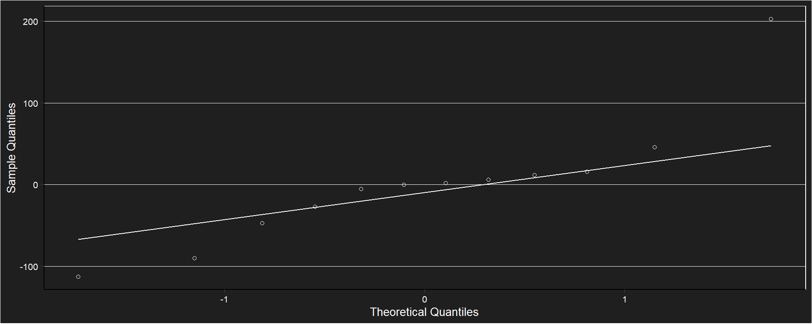

Sólidos solubles y acidez
Análisis sobre la concentración de fenoles expresados en mg equivalente de ácido tánico cada 100g PF
Tabla descriptiva
## # A tibble: 4 × 4
## madurez n Mean sd
## <fct> <int> <dbl> <dbl>
## 1 I 3 906. 176.
## 2 MM 3 426. 46.3
## 3 M 3 337. 23.6
## 4 SM 3 130. 5.73Gráfico de puntos

Modelo
## Generalized least squares fit by REML
## Model: fenoles ~ madurez
## Data: data_mad_phenols
## Log-restricted-likelihood: -41.3806869
##
## Coefficients:
## (Intercept) madurezMM madurezM madurezSM
## 905.819027 -479.663662 -568.419488 -775.410248
##
## Variance function:
## Structure: Different standard deviations per stratum
## Formula: ~1 | madurez
## Parameter estimates:
## I MM M SM
## 1.0000000000 0.2628847249 0.1341498651 0.0325501269
## Degrees of freedom: 12 total; 8 residual
## Residual standard error: 176.169587Supuestos 
##
## Shapiro-Wilk normality test
##
## data: fenoles_mad_ajuste$residuos
## W = 0.8528754, p-value = 0.0398472Anova
## Denom. DF: 8
## numDF F-value p-value
## (Intercept) 1 2111.86338 <.0001
## madurez 3 128.16127 <.0001Test de Tukey
## $emmeans
## madurez emmean SE df lower.CL upper.CL
## I 905.819027 101.7115585 2 468.302973 1343.335081
## MM 426.155365 26.7384151 2 311.061381 541.249350
## M 337.399539 13.6445918 2 278.683347 396.115731
## SM 130.408779 3.3107241 2 116.163584 144.653975
##
## Degrees-of-freedom method: satterthwaite
## Confidence level used: 0.95
##
## $contrasts
## contrast estimate SE df t.ratio p.value
## I - MM 479.663662 105.1674093 2.28 4.561 0.0905
## I - M 568.419488 102.6226876 2.07 5.539 0.0717
## I - SM 775.410248 101.7654265 2.00 7.620 0.0414
## MM - M 88.755826 30.0186230 2.97 2.957 0.1671
## MM - SM 295.746586 26.9426007 2.06 10.977 0.0187
## M - SM 206.990760 14.0405050 2.23 14.742 0.0077
##
## Degrees-of-freedom method: satterthwaite
## P value adjustment: tukey method for comparing a family of 4 estimates